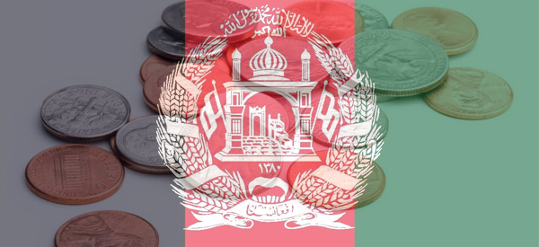
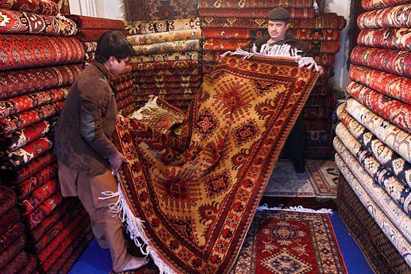

The economy of Afghanistan has had significant improvement in the last decade due to the infusion of billions of dollars in international assistance. Afghanistan's GDP stands at about $64.08 billion with the exchange rate of $18.4 billion and GDP per capita(per person) of about $2000. Afghanistan's public debt is $1.28 billion, and its revenue $1.58 billion. Its total expenses cost around $50 billion.
Afghanistan also has a few partners for exporting. These include India, Pakistan, and Tajikistan in order from greatest to least precentage of exports. Afghanistan's exports gives Afghanistan around $660 million. Afghanistan's main exporting products are fruits, and nuts, Afghan rugs, wool, cotton, hides and pelts, and gemstones.
|
|  |
Afghanistan has many partners for importing. These include Pakistan, India, United States, Turkmenistan, China, Kazakhstan, and Azerbaijan in order from greatest to least precentage of imports. Afghanistan's imports cost around $6.2 billion. Its main importing products are machinery and other capital goods, food, textiles, and petroleum products.